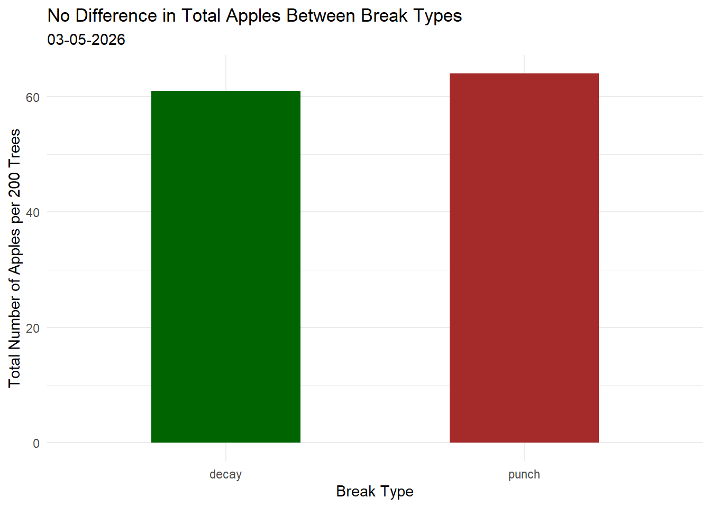
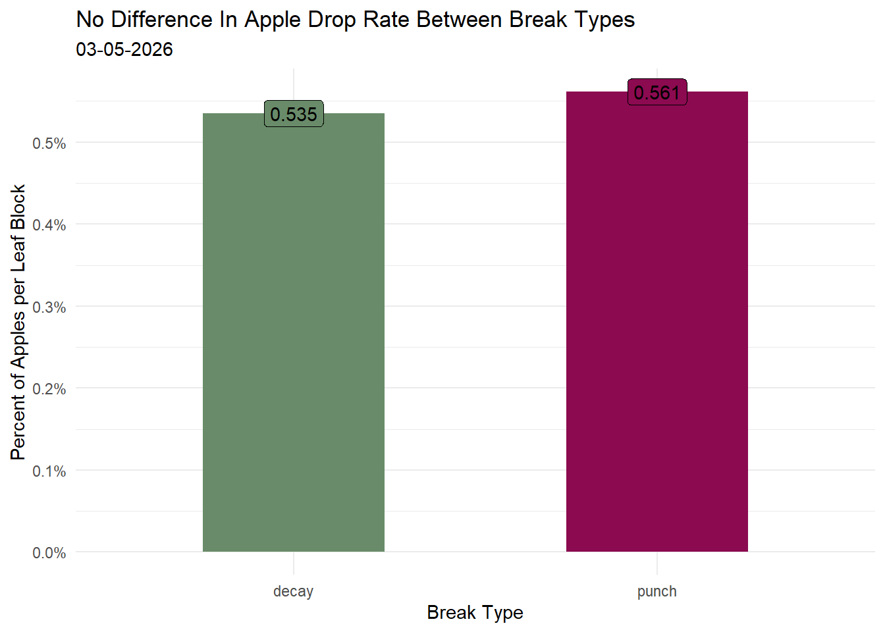

library(tidyverse)
library(here)
library(janitor)
library(readxl)
library(scales)
library(ggeffects)
library(MuMIn)
salinity <- read_csv( # creating data frame
here(
"data",
"salinity-pickleweed.csv"
))Homework 3 193DS
Set Up
Problem 1.
a) Appropriate Test
In order to determine the strength of the relationship between salinity (mS/cm) and California pickleweed biomass (g), I would use an Ordinary Least Squares (OLS) test and a Pearson’s r test. An OLS provides a model equation that describes the linear relationship between a response variable and predictor variable, while a Pearson’s r test tell us the strength and directionality of this relationship.
b) Visualization
ggplot(data = salinity,# setting up ggplot using data frame "salinity"
aes(x = salinity_mS_cm,# setting x axis
y = pickleweed)) + # setting y axis
geom_point(color = "darkorchid4") + # changing point color
labs(x = "Salinity (mS/cm", # labelling x axis
y = "Pickleweed Biomass (g)", # labelling y axis
title = "As Salinity Increases, Biomass Increases") + # making a title
geom_smooth(method = "lm", # adding linear model line
color = "magenta") +
theme(plot.title.position = "plot") + # changing title position
theme_minimal() # changing theme to minimal
c) Checking Assumptions and Test
salinity_lm <- lm(
pickleweed ~ salinity_mS_cm,
data = salinity
) # created linear regression model using salinity data frame
summary(salinity_lm) # display model
Call:
lm(formula = pickleweed ~ salinity_mS_cm, data = salinity)
Residuals:
Min 1Q Median 3Q Max
-12.499 -5.819 -1.726 4.794 21.765
Coefficients:
Estimate Std. Error t value Pr(>|t|)
(Intercept) 13.0895 4.0350 3.244 0.00389 **
salinity_mS_cm 2.0832 0.7188 2.898 0.00860 **
---
Signif. codes: 0 '***' 0.001 '**' 0.01 '*' 0.05 '.' 0.1 ' ' 1
Residual standard error: 9.144 on 21 degrees of freedom
Multiple R-squared: 0.2857, Adjusted R-squared: 0.2517
F-statistic: 8.398 on 1 and 21 DF, p-value: 0.008605par(mfrow = c(2,2)) # making residual plots to check assumptions
plot(salinity_lm)
Checking Assumptions:
The diagnostic plots look good. Residuals look homoscedastic (constant variance) based on residuals vs fitted plot and scale location plot. Residuals (errors) appear to be normally distributed based on q-q plot. Linearity can be assumed based on scatterplot including line (seen above).
d) Results
To evaluate the strength in the relationship between pickleweed biomass and soil salinity, I chose to use a least squares regression model. Using this model, I found evidence to suggest that soil salinity affected pickleweed biomass. (ordinary least squares regression: F(1,21) = 8.4, p = 0.009, \(\alpha\) = 0.05, adjusted R^2 = 0.25)
With each 1 mS/cm increase in soil salinity, pickleweed biomass increased by 2.01 +/- 0.72 g. This model explains 25% of the variatation in pickleweed biomass.
e) Implications
The results of my linear model provide evidence that as soil salinity increases, pickleweed biomass increases. Planting pickleweed in areas with higher soil salinity may increase the plant’s success, however, there are some limitations to this study. First, there is likely a maximum threshold for soil salinity that if surpassed, may decrease pickleweed plant growth, so I would not recommend planting pickleweed in areas with a higher soil salinity than 10 mS/cm. Additionally, an R^2 of 0.25 is low, suggesting there are many other variables that affect pickleweed biomass and require further testing to determine the most ideal sites for restoration.
f) Double Checking
cor.test(salinity$salinity_mS_cm, salinity$pickleweed,
method = "pearson") # running pearson's r using salinity data frame
Pearson's product-moment correlation
data: salinity$salinity_mS_cm and salinity$pickleweed
t = 2.8979, df = 21, p-value = 0.008605
alternative hypothesis: true correlation is not equal to 0
95 percent confidence interval:
0.1568265 0.7757682
sample estimates:
cor
0.5344778 I found a moderate positive (Pearson’s r: R(2.9,21 = 0.53, p = 0.009, $$ = 0.05) relationship between soil salinity and pickleweed biomass. Both the pearson’s r and least squares tests would lead me to interpret the results in the same way, as the p value is the same. However, with an R of 0.53, I can more definitely conclude that the relationship between salinity and pickleweed biomass is moderately positive.
Problem 2
For my personal data experiment, I decided to test the common myth that in Minecraft, allowing the leaves of an oak tree to decay naturally will provide more apples than if you were to punch the leaves by hand. To perform this test, I grew 100 (approximately 5700 leaf blocks) oak trees on a superflat world over a large plot of running water that leads to a hopper attached to a chest to ensure all dropped items are collected. First, I broke all of the leaves by hand and collected the apples. Then, I reloaded the save and broke the logs and allowed the leaves to decay naturally. I repeated these steps in order to collect more data.
a) Plots
apple <- read_xlsx( # creating personal data frame
here(
"data",
"apple.xlsx"
))
apple_total <- apple |> # creating data frame for total apples
group_by(break_type) |> # grouping by break type
summarise(total =sum(apples),) # count totalggplot(data = apple_total, # setting up gg plot with data frame
aes(x = break_type,# setting x and y axis
y = total,
fill = break_type)) + # color by break type
geom_col(width = 0.5) + # column chart
scale_fill_manual( # setting custom colors
values = c(
"decay" = "darkgreen",
"punch" = "brown"
)
) +
labs(x = "Break Type", # setting labels
y = "Total Number of Apples per 200 Trees",
title = "No Difference in Total Apples Between Break Types",
subtitle = "03-05-2026") +
theme_minimal() + # changing theme
theme(legend.position = "none") # removing legend
apple_percent <- apple_total |> # create new data frame for percentages
group_by(break_type) |>
mutate(percentage = total / 11400) # calculate percentageggplot(data = apple_percent,# create new ggplot with percent data frame
aes(x = break_type, # set x and y axis
y = percentage,
fill = break_type)) + # color by break type
geom_col(width = 0.5) + # column chart
scale_fill_manual( # set custom colors
values = c(
decay = "darkseagreen4",
punch = "deeppink4"
)
) +
theme_minimal() + # change theme
labs(x = "Break Type", # set labels
y = "Percent of Apples per Leaf Block",
title = "No Difference In Apple Drop Rate Between Break Types",
subtitle = "03-05-2026") +
scale_y_continuous(labels = scales::percent, # change y axis to percentages
breaks = scales::pretty_breaks(n =8)) + # make brakes look nicer
theme(legend.position = "none") + # remove legend position
geom_label(aes(label = round(percentage * 100,3))) # add labels to columns and round to 3 digits
b) Caption
Plot 1: Compares the total number of apples that dropped from decayed leaves to punched leaves. In total, the decayed leaves dropped 61 apples while the punched leaves dropped 63 apples per 200 trees or approximately 11400 leaves.
Plot 2: Compares the apple drop rate percentage between decayed leaves and punched leaves. Decayed leaves had a drop rate of 0.535% while punched leaves had a drop rate of 0.561
Problem 3
a) What visualization could look like
My visualization could look like a big pixelated minecraft apple. It could be grayscale except for the percentage of trees that dropped apples (about 1/3) and be split down the middle to represent both categories (punched vs decayed). One side could be red, the other could be green.
b) Drawing